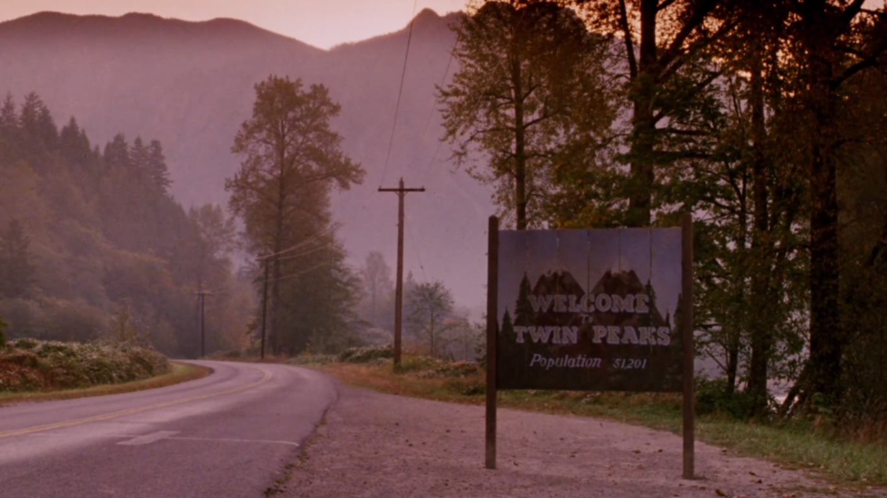

Bienvenidos a Twin Peaks

Twin Peaks es una serie de drama, misterio y suspenso creada por David Lynch y Mark Frost. La historia comienza con la investigación del asesinato de Laura Palmer en un pequeño pueblo rodeado de bosques, donde nada es tan simple como parece. A medida que avanza la trama, la serie mezcla crimen, secretos, surrealismo y elementos sobrenaturales, construyendo una atmósfera única que la convirtió en una producción inolvidable.
Considerada una obra de culto, Twin Peaks se destacó por su estilo visual, su música, sus personajes memorables y su manera de contar una historia llena de rarezas y simbolismos. Su impacto fue tan grande que sigue siendo una de las series más influyentes y analizadas de la televisión, tanto por su originalidad como por la huella que dejó en la cultura popular.
Este sitio web está dedicado a explorar los aspectos más importantes de la serie. A lo largo de sus páginas se puede encontrar información general sobre Twin Peaks, una presentación de su historia y contexto, una sección dedicada a los personajes principales, un repaso por sus temporadas y episodios más importantes, además de curiosidades, datos de producción y un espacio de contacto pensado para futuras consultas o comentarios sobre la serie.
Información general
- Género: Drama, misterio, thriller, surrealismo
- Creadores: David Lynch y Mark Frost
- País: Estados Unidos
- Estreno: 1990
- Temporadas: 3
¿Por qué es una serie tan recordada?
Twin Peaks marcó un antes y un después en la televisión por su narrativa extraña, su estética inolvidable y el impacto cultural que generó en los años noventa y también en las generaciones posteriores.